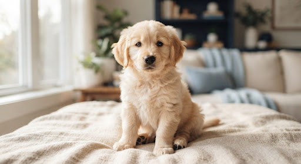

Disponible
8 semanas · Macho
Mateo
Golden RetrieverCarácter tranquilo, sumamente curioso y afable. Le encanta explorar el césped y reposar plácidamente en brazos familiares.
check_circle
Esquema inicial ok
psychology
Test de Campbell apto